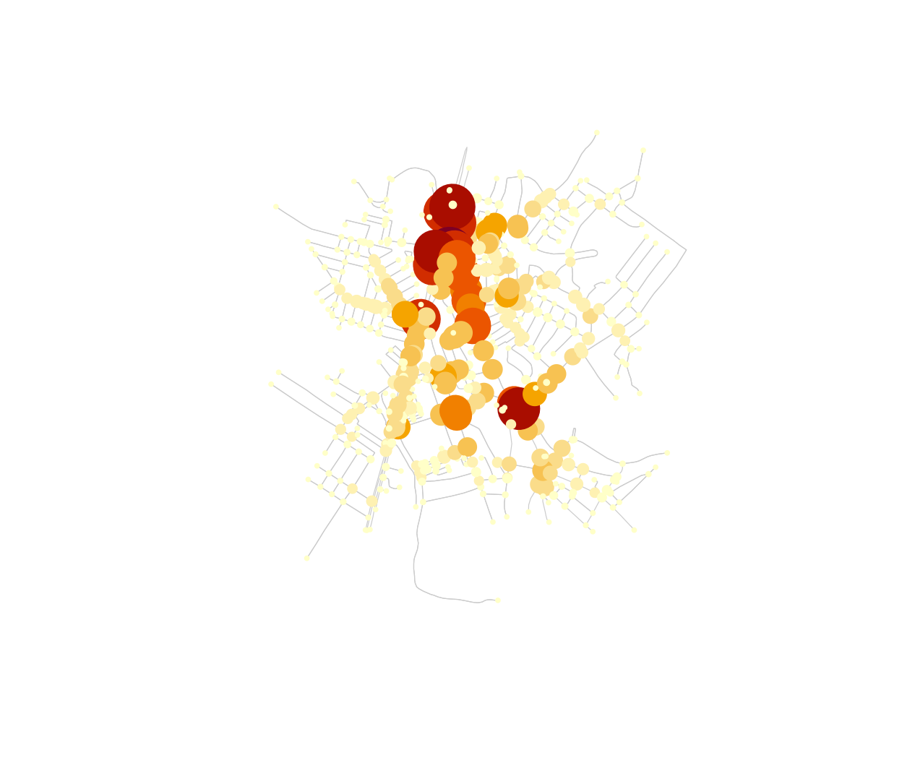

osmnxr summarises a street network with the geometric
and topological measures used in urban morphology (Boeing 2025). We use
a bundled real network — the centre of Olinda, Brazil — so everything
here runs offline.
g <- ox_example("olinda")
g
#>
#> ── osm_graph ───────────────────────────────────────────────────────────────────
#> 498 nodes, 1191 edges
#> Network type: "unknown"
#> Simplified: FALSE
#> CRS: "WGS 84"Basic statistics
ox_basic_stats(g)
#> # A tibble: 1 × 7
#> n_nodes n_edges total_length mean_length mean_out_degree self_loops circuity
#> <int> <int> <dbl> <dbl> <dbl> <int> <dbl>
#> 1 498 1191 95484. 80.2 2.39 1 1.06The pieces of this summary are standard urban indicators:
-
n_nodes/n_edges— intersections and street segments. Intersection density (nodes per km²) is the most common measure of network “grain”. -
mean_length— average street segment length, a proxy for block size. -
total_length— total street length; divide by area for street density. -
circuity— how much streets deviate from straight lines.
area_km2 <- as.numeric(sf::st_area(sf::st_convex_hull(sf::st_union(g$nodes)))) / 1e6
n_intersections <- sum(g$nodes$osmid %in% c(g$edges$u, g$edges$v))
n_intersections / area_km2 # intersections per km^2
#> [1] 151.0356Circuity
Circuity is total street length over straight-line distance between
segment endpoints. A value near 1 means straight streets;
higher means more winding:
ox_circuity(g)
#> [1] 1.061807Centrality: finding chokepoints
Betweenness centrality counts the share of shortest paths passing through each node. Its maximum highlights structural chokepoints — “a bridge connecting a city’s halves” (Boeing & Ha 2024) — that are single points of failure for mobility and resilience.
ct <- ox_centrality(g, type = "betweenness", normalized = TRUE)
ct[order(-ct$betweenness), ][1:5, ]
#> # A tibble: 5 × 2
#> osmid betweenness
#> <dbl> <dbl>
#> 1 6146825103 0.183
#> 2 5662175659 0.178
#> 3 8291701581 0.165
#> 4 1572677068 0.163
#> 5 5662175651 0.160Map it: the darkest, largest nodes carry the most through-traffic.
nodes <- g$nodes
nodes$betweenness <- ct$betweenness[match(nodes$osmid, ct$osmid)]
plot(g, col = "grey80", lwd = 0.6)
plot(nodes["betweenness"], pch = 19,
cex = 0.4 + 4 * nodes$betweenness / max(nodes$betweenness),
pal = function(n) hcl.colors(n, "YlOrRd", rev = TRUE), add = TRUE)
The high-betweenness nodes trace the through-routes that hold the network together — exactly the junctions a planner would protect or reinforce.